Ahora utilizaremos el dataset lasvegas.trip del paquete datasetsICR. Este dataset contiene datos de 21 hoteles con 9 caracteristicas. Estas caracteristicas son cuantitativas y cualitativas
library(datasetsICR)
data ("lasvegas.trip")
str(lasvegas.trip)## 'data.frame': 21 obs. of 9 variables:
## $ Score : num 4.21 4.12 3.21 4.54 3.71 ...
## $ Hotel.stars : num 5 5 3 5 3 3 3 3 4 4 ...
## $ Nr..rooms : num 3933 3348 3773 2034 3981 ...
## $ Pool : Factor w/ 2 levels "NO","YES": 2 2 1 2 2 2 2 2 2 2 ...
## $ Gym : Factor w/ 2 levels "NO","YES": 2 2 2 2 2 2 2 2 2 2 ...
## $ Tennis.court : Factor w/ 2 levels "NO","YES": 1 1 1 1 1 1 1 1 1 1 ...
## $ Spa : Factor w/ 2 levels "NO","YES": 2 2 1 2 2 1 2 1 2 2 ...
## $ Casino : Factor w/ 2 levels "NO","YES": 2 2 2 2 2 1 2 2 2 2 ...
## $ Free.internet: Factor w/ 2 levels "NO","YES": 2 2 2 2 2 2 2 2 1 2 ...library(cluster)
D <- daisy(lasvegas.trip[,-3],metric="gower")res.agnes <- agnes(D, diss = TRUE, method = "complete")res.agnes$order.lab <- rep (" " , 21)
plot(res.agnes, hang = -0.1 , which.plots = 2 , main = " ")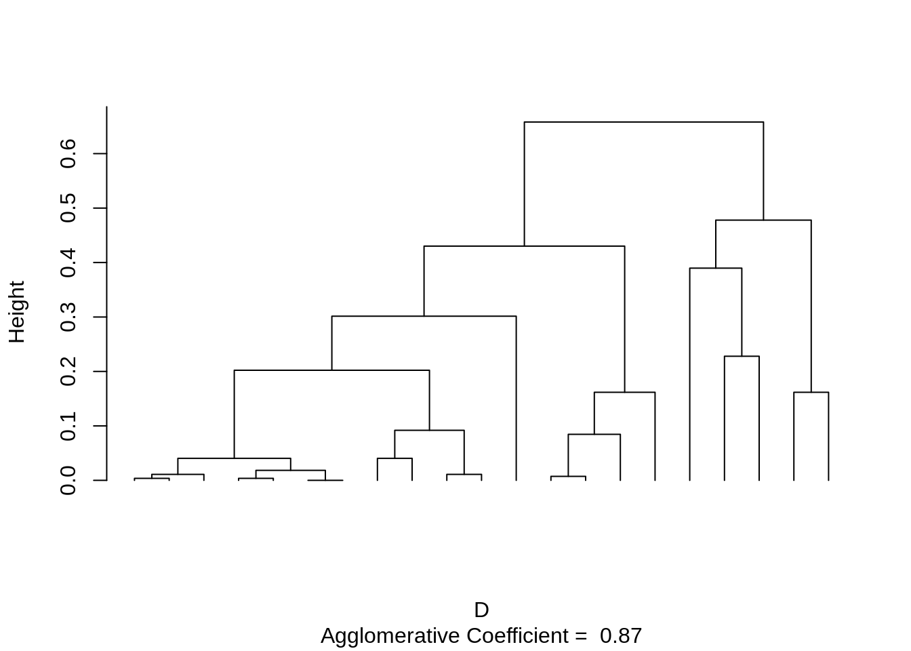
cluster.agnes <- cutree(res.agnes , k = 2)
table(cluster.agnes)## cluster.agnes
## 1 2
## 16 5res.hclust <- hclust(D)
cluster.hclust <- cutree(res.hclust , k = 2)
res.hclust$order.lab <- rep (" " , 21)library(mclust)
adjustedRandIndex(cluster.hclust, cluster.agnes)## [1] 1library("ape")
colors = c("green", "black")
plot(as.phylo(res.hclust), tip.color = colors[cluster.hclust])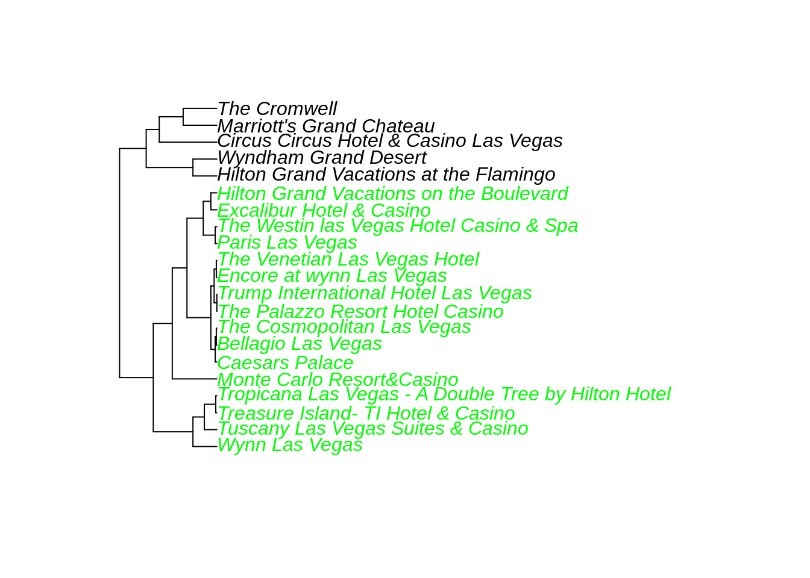
Podemos calcular los promedios por cluster para el score, la cantidad de estrellas y número de habitaciones
k <- 2
lapply(X=1:k, FUN=function(nc) apply(lasvegas.trip[cluster.agnes == nc , 1:3], 2 , mean ) )## [[1]]
## Score Hotel.stars Nr..rooms
## 4.151042 4.312500 2520.562500
##
## [[2]]
## Score Hotel.stars Nr..rooms
## 4.033333 3.200000 1159.000000Notemos que no hay una gran diferencia en el score, pero si en la cantidad de estrellas de los hoteles y del numero de habitaciones. Esto se debe a que el score es subjetivo debido al usuario. Para las variables categoricas podemos plotear un barplot y podemos agregar el p-value de un test \(\chi^2\) (El test \(\chi^2\) tiene como hipótesis nula que las columnas y las filas de la tabla de contingencia son independientes, en este caso nos referimos a que (SI,NO) es independiente de (CLUSTER 1, CLUSTER 2))
par(mfrow=c(3 , 2))
for(j in 4: dim(lasvegas.trip)[2]){
counts <- table(lasvegas.trip[,j],cluster.agnes)
barplot(counts, main=names(lasvegas.trip)[j], names.arg = paste("Clus. ", colnames(counts)) ,
xlab =round(chisq.test(counts)$p.value , 2), col = c("darkblue", "red"),
legend =rownames(counts))
}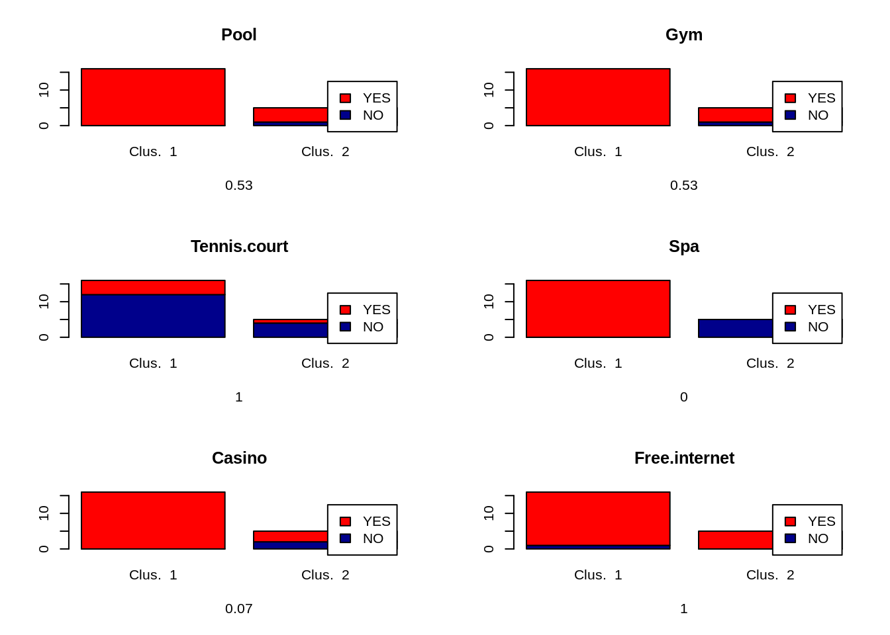
Notemos que se obtuvieron p-values cercanos a 1 y cercanos a 0. Los valores cercanos a 0 indican que es poco probable que la diferencia observada se deba al azar. Los valores cercanos a 1 sugieren que no hay diferencia entre los grupos, salvo que se deba al azar.
El dataset flags del paquete datasetsICR contiene 194 banderas con 29 características, algunas de ellas cualitativas y otras cuantitativas.
data("flags")
str(flags)## 'data.frame': 194 obs. of 29 variables:
## $ landmass : Factor w/ 6 levels "N.America","S.America",..: 5 3 4 6 3 4 1 1 2 2 ...
## $ zone : Factor w/ 4 levels "NE","SE","SW",..: 1 1 1 3 1 2 4 4 3 3 ...
## $ area : int 648 29 2388 0 0 1247 0 0 2777 2777 ...
## $ population: int 16 3 20 0 0 7 0 0 28 28 ...
## $ language : Factor w/ 10 levels "English","Spanish",..: 10 6 8 1 6 10 1 1 2 2 ...
## $ religion : Factor w/ 8 levels "Catholic","Other Christian",..: 3 7 3 2 1 6 2 2 1 1 ...
## $ bars : int 0 0 2 0 3 0 0 0 0 0 ...
## $ stripes : int 3 0 0 0 0 2 1 1 3 3 ...
## $ colours : int 5 3 3 5 3 3 3 5 2 3 ...
## $ red : Factor w/ 2 levels "absent","present": 2 2 2 2 2 2 1 2 1 1 ...
## $ green : Factor w/ 2 levels "absent","present": 2 1 2 1 1 1 1 1 1 1 ...
## $ blue : Factor w/ 2 levels "absent","present": 1 1 1 2 2 1 2 2 2 2 ...
## $ gold : Factor w/ 2 levels "absent","present": 2 2 1 2 2 2 1 2 1 2 ...
## $ white : Factor w/ 2 levels "absent","present": 2 1 2 2 1 1 2 2 2 2 ...
## $ black : Factor w/ 2 levels "absent","present": 2 2 1 1 1 2 1 2 1 1 ...
## $ orange : Factor w/ 2 levels "absent","present": 1 1 1 2 1 1 2 1 1 1 ...
## $ mainhue : Factor w/ 8 levels "black","blue",..: 5 7 5 2 4 7 8 7 2 2 ...
## $ circles : int 0 0 0 0 0 0 0 0 0 0 ...
## $ crosses : int 0 0 0 0 0 0 0 0 0 0 ...
## $ saltires : int 0 0 0 0 0 0 0 0 0 0 ...
## $ quarters : int 0 0 0 0 0 0 0 0 0 0 ...
## $ sunstars : int 1 1 1 0 0 1 0 1 0 1 ...
## $ crescent : Factor w/ 2 levels "absent","present": 1 1 2 1 1 1 1 1 1 1 ...
## $ triangle : Factor w/ 2 levels "absent","present": 1 1 1 2 1 1 1 2 1 1 ...
## $ icon : Factor w/ 2 levels "absent","present": 2 1 1 2 1 2 1 1 1 1 ...
## $ animate : Factor w/ 2 levels "absent","present": 1 2 1 2 1 1 2 1 1 1 ...
## $ text : Factor w/ 2 levels "absent","present": 1 1 1 1 1 1 1 1 1 1 ...
## $ topleft : Factor w/ 7 levels "black","blue",..: 1 6 4 2 2 6 7 1 2 2 ...
## $ botright : Factor w/ 8 levels "black","blue",..: 5 7 8 7 7 1 2 7 2 2 ...Las últimas 23 variables son características fisicas de las banderas, por lo que nos enfocaremos en estas. De estas 23 variables, 8 de estas son cuantitativas y el resto son cualitativas. Debido a que tenemos variables cualitativas utilizamos la distancia gower
D.flags <- daisy(flags[,7:ncol(flags)], metric = "gower")Aplicaremos 3 algoritmos aglomerativos (single, average y complete) para luego comparar
res.single <- hclust(d=D.flags, method = "single")
res.average <-hclust(d=D.flags, method = "average")
res.complete <-hclust(d=D.flags, method = "complete")Desde los gráficos podemos ver que el método single cae en el efecto cadena. Por lo que nos enfocaremos en los otros dos métodos.
par(mfrow=c(3 , 1))
plot(res.single, labels = FALSE , main = " Single" )
plot(res.average , labels = FALSE , main = "Average")
plot(res.complete , labels = FALSE , main = " Complete" )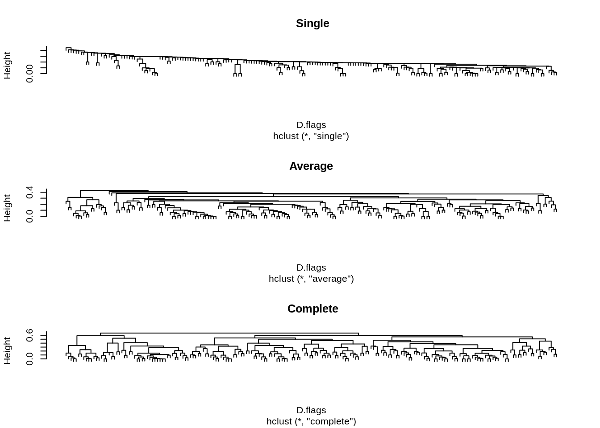
Desde el método average podemos en la altura aproximada de 0.30 podemos ver tres clusters grandes y algunos clusters pequeños, por lo que podemos aproximar a 3 clusters.
Mediante la función cutree también podemos cortar el arbol mediante la altura. Notemos que cortando en \(h=0.32\) encontramos 8 clusters, pero solo 3 son grandes
cl.ave <- cutree(res.average , h = 0.32)
table(cl.ave)## cl.ave
## 1 2 3 4 5 6 7 8
## 78 85 17 6 3 3 1 1Por lo que podemos mandar estos clusters atípicos a un cluster 0
cl.ave[cl.ave > 3] <- 0
table(cl.ave)## cl.ave
## 0 1 2 3
## 14 78 85 17Desde el método complete es claro que hay 3 clusters.
cl.com <- cutree(res.complete , k=3)
table(cl.com)## cl.com
## 1 2 3
## 71 74 49Ahora comparamos los modelos para elegir el mejor. Primero comparemos ambos modelos entre sí con ICR. Luego utilizaremos la función mapClass del paquete mclust. Esta función toma dos valores \(a\),\(b\) como vectores y retorna \(aTxb\) y \(bTxa\) (donde \(x\) es el numero del cluster). La función retorna a que cluster de \(b\) corresponde mas cercamente los valores de \(a\) (para \(aTxb\), análogo para \(bTxa\))
adjustedRandIndex(cl.com , cl.ave)## [1] 0.3726202mapClass(cl.com , cl.ave )## $aTOb
## $aTOb$`1`
## [1] 1
##
## $aTOb$`2`
## [1] 2
##
## $aTOb$`3`
## [1] 2
##
##
## $bTOa
## $bTOa$`0`
## [1] 2
##
## $bTOa$`1`
## [1] 1
##
## $bTOa$`2`
## [1] 2
##
## $bTOa$`3`
## [1] 3Notamos que las dos soluciones parecen concordar entre sí, nos quedamos con el método complete linkage, por su simplicidad.
Ahora analizaremos la bondad del ajuste mediante el test \(\chi^2\). Recordemos que la hipótesis nula del test es la independencia de los clusters
table(cl.com, flags$landmass)##
## cl.com N.America S.America Europe Africa Asia Oceania
## 1 5 4 6 37 17 2
## 2 8 9 23 9 16 9
## 3 18 4 6 6 6 9chisq.test(cl.com , flags$landmass)$p.value## [1] 1.42892e-10Debido a que el p-value es cercano a 0, los clusters son significantes para la variable landmass
table(cl.com, flags$language)##
## cl.com English Spanish French German Slavic Other Indo-European Chinese Arabic
## 1 13 2 10 0 1 12 1 13
## 2 12 9 6 6 3 10 2 5
## 3 18 10 1 0 0 8 1 1
##
## cl.com Japanese/Turkish/Finnish/Magyar Others
## 1 1 18
## 2 2 19
## 3 1 9chisq.test(cl.com , flags$language)$p.value## [1] 0.0008972897Debido a que el p-value es cercano a 0, los clusters son significantes para la variable language
table(cl.com ,flags$religion)##
## cl.com Catholic Other Christian Muslim Buddhist Hindu Ethnic Marxist Others
## 1 7 13 23 2 2 18 5 1
## 2 23 19 10 5 0 7 8 2
## 3 10 28 3 1 2 2 2 1chisq.test(cl.com, flags$religion)$p.value## [1] 1.557342e-06Debido a que el p-value es cercano a 0, los clusters son significantes para la variable religion.
Ahora solo nos queda estudiar los clusters. Notemos que el cluster 1 se caracteriza principalmente por ser de religión musulmana y étnica y sus países provienen de África y Asia. En este grupo, observamos el porcentaje más alto de países de lengua árabe.
Notamos que muchos países asiáticos dentro del cluster 1 son del área de Medio Oriente excepto China y Vietnam.
row.names(flags)[flags$landmass == "Asia" & cl.com == 1]## [1] "Afghanistan" "Bangladesh" "China" "Iran" "Iraq"
## [6] "Jordan" "Kampuchea" "Kuwait" "North-Yemen" "Oman"
## [11] "Pakistan" "Saudi-Arabia" "Sri-Lanka" "Syria" "UAE"
## [16] "USSR" "Vietnam"Por otro lado en el cluster 2 la mayoría de los paises asiáticos son del lejano oriente. La religión mas común es católica y otras cristianas, es el cluster con la mayor cantidad de países marxistas.
row.names(flags)[flags$landmass == "Asia" & cl.com == 2]## [1] "Bahrain" "Bhutan" "Brunei" "Burma"
## [5] "Japan" "Laos" "Lebanon" "Malaysia"
## [9] "Maldive-Islands" "Mongolia" "Singapore" "South-Korea"
## [13] "South-Yemen" "Taiwan" "Thailand" "Turkey"El tercer cluster contiene mayoritariamente países de América del norte. La mayoría de las religiones son otras cristianas. El lenguaje predominante es el inglés. Sin embargo hay países asiaticos.
row.names(flags)[flags$landmass == "Asia" & cl.com == 3]## [1] "Hong-Kong" "India" "Israel" "Nepal" "North-Korea"
## [6] "Qatar"Tambien podemos ver la distribución de los colores de las banderas en cada cluster.
plot.data <- matrix(NA,nrow=3,ncol = 7)
rownames(plot.data) <- c("Clus.1","Clus.2","Clus.3")
colnames(plot.data) <-rep(NA,7)
cn <- 0
for(j in c(10:16)){
cn <- cn + 1
counts <- table(flags[,j],cl.com)
colnames(plot.data)[cn] <- names(flags)[j]
plot.data[,cn] <- prop.table(counts,2)[2,]*100
}
barplot(plot.data , col =gray.colors(3) ,
border = " white " , beside = T ,legend = rownames( plot.data ) ,
xlab = "colours" , ylab = "percentage" )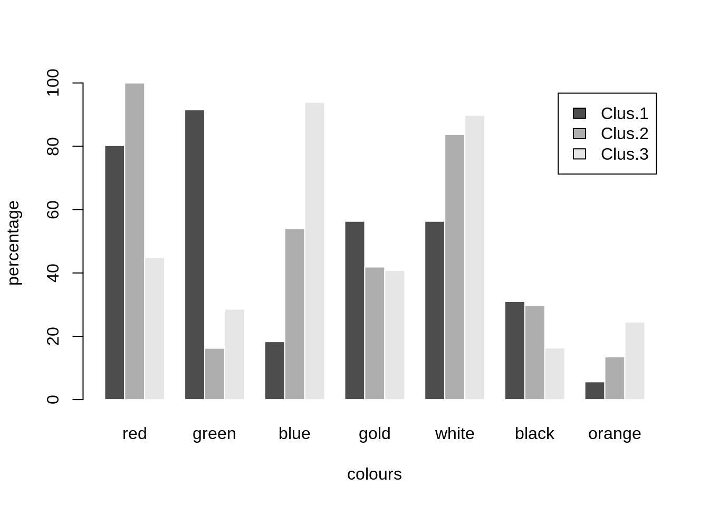
El siguiente dataset wiki4HE del paquete datasetsICR contiene datos de una encuesta a 913 profesores universitarios sobre la persepción y el uso de wikipedia con fine didácticos. La encuesta contiene 53 variables.
data("wiki4HE" )
str(wiki4HE)## 'data.frame': 913 obs. of 53 variables:
## $ AGE : int 40 42 37 40 51 47 43 55 54 50 ...
## $ GENDER : int 0 0 0 0 0 0 0 0 0 0 ...
## $ DOMAIN : Factor w/ 7 levels "?","1","2","3",..: 3 6 5 5 7 5 5 7 2 5 ...
## $ PhD : int 1 1 1 0 0 0 0 0 1 1 ...
## $ YEARSEXP : Factor w/ 37 levels "?","0","1","10",..: 8 12 7 7 36 11 5 6 8 20 ...
## $ UNIVERSITY : int 1 1 1 1 1 1 1 1 1 1 ...
## $ UOC_POSITION : Factor w/ 7 levels "?","1","2","3",..: 3 3 4 4 4 4 4 4 3 3 ...
## $ OTHER_POSITION: Factor w/ 3 levels "?","1","2": 1 1 1 1 1 1 1 1 1 1 ...
## $ OTHERSTATUS : Factor w/ 8 levels "?","1","2","3",..: 1 1 1 1 1 1 1 1 1 1 ...
## $ USERWIKI : Factor w/ 3 levels "?","0","1": 2 2 2 2 3 2 2 2 2 2 ...
## $ PU1 : Factor w/ 6 levels "?","1","2","3",..: 5 3 3 4 5 3 5 5 5 5 ...
## $ PU2 : Factor w/ 6 levels "?","1","2","3",..: 5 4 3 4 4 3 5 5 5 5 ...
## $ PU3 : Factor w/ 6 levels "?","1","2","3",..: 4 4 3 5 6 4 5 6 6 5 ...
## $ PEU1 : Factor w/ 6 levels "?","1","2","3",..: 6 5 5 4 6 6 6 5 5 6 ...
## $ PEU2 : Factor w/ 6 levels "?","1","2","3",..: 6 5 5 4 5 5 1 4 6 6 ...
## $ PEU3 : Factor w/ 6 levels "?","1","2","3",..: 4 4 4 4 4 4 6 5 5 1 ...
## $ ENJ1 : Factor w/ 6 levels "?","1","2","3",..: 5 4 4 5 5 4 6 5 6 6 ...
## $ ENJ2 : Factor w/ 6 levels "?","1","2","3",..: 5 5 4 4 5 4 6 4 6 5 ...
## $ Qu1 : Factor w/ 6 levels "?","1","2","3",..: 4 5 3 4 5 4 5 4 5 5 ...
## $ Qu2 : Factor w/ 6 levels "?","1","2","3",..: 4 5 3 5 6 4 5 4 5 5 ...
## $ Qu3 : Factor w/ 6 levels "?","1","2","3",..: 3 4 3 4 5 4 5 4 3 5 ...
## $ Qu4 : Factor w/ 6 levels "?","1","2","3",..: 3 4 6 4 4 5 3 4 6 3 ...
## $ Qu5 : Factor w/ 6 levels "?","1","2","3",..: 4 3 4 4 5 5 5 5 4 4 ...
## $ Vis1 : Factor w/ 6 levels "?","1","2","3",..: 4 4 3 4 5 4 5 4 5 4 ...
## $ Vis2 : Factor w/ 6 levels "?","1","2","3",..: 4 4 4 5 5 5 5 4 4 1 ...
## $ Vis3 : Factor w/ 6 levels "?","1","2","3",..: 2 2 3 4 5 5 5 5 5 4 ...
## $ Im1 : Factor w/ 6 levels "?","1","2","3",..: 3 2 3 3 4 4 4 5 4 4 ...
## $ Im2 : Factor w/ 6 levels "?","1","2","3",..: 5 3 5 3 3 6 6 6 4 6 ...
## $ Im3 : Factor w/ 6 levels "?","1","2","3",..: 3 2 4 4 4 4 4 5 4 4 ...
## $ SA1 : Factor w/ 6 levels "?","1","2","3",..: 5 5 5 6 6 6 6 6 6 5 ...
## $ SA2 : Factor w/ 6 levels "?","1","2","3",..: 5 5 3 6 6 6 6 6 6 6 ...
## $ SA3 : Factor w/ 6 levels "?","1","2","3",..: 5 5 5 6 6 6 6 6 5 6 ...
## $ Use1 : Factor w/ 6 levels "?","1","2","3",..: 4 3 2 4 4 3 4 2 2 5 ...
## $ Use2 : Factor w/ 6 levels "?","1","2","3",..: 2 3 2 4 4 2 5 3 2 2 ...
## $ Use3 : Factor w/ 6 levels "?","1","2","3",..: 2 2 2 4 6 4 5 4 5 6 ...
## $ Use4 : Factor w/ 6 levels "?","1","2","3",..: 3 2 2 4 6 3 4 4 5 5 ...
## $ Use5 : Factor w/ 6 levels "?","1","2","3",..: 5 3 2 4 6 5 6 5 6 6 ...
## $ Pf1 : Factor w/ 6 levels "?","1","2","3",..: 2 2 4 5 6 5 5 5 2 3 ...
## $ Pf2 : Factor w/ 6 levels "?","1","2","3",..: 2 2 4 5 6 4 4 4 3 3 ...
## $ Pf3 : Factor w/ 6 levels "?","1","2","3",..: 4 2 4 5 6 3 4 5 4 5 ...
## $ JR1 : Factor w/ 6 levels "?","1","2","3",..: 5 5 5 6 4 5 6 5 4 5 ...
## $ JR2 : Factor w/ 6 levels "?","1","2","3",..: 2 4 4 5 4 2 5 5 3 5 ...
## $ BI1 : Factor w/ 6 levels "?","1","2","3",..: 3 3 2 4 6 5 4 4 5 6 ...
## $ BI2 : Factor w/ 6 levels "?","1","2","3",..: 4 3 2 4 6 5 5 5 4 6 ...
## $ Inc1 : Factor w/ 6 levels "?","1","2","3",..: 6 5 6 4 6 6 5 4 6 6 ...
## $ Inc2 : Factor w/ 6 levels "?","1","2","3",..: 6 5 4 5 6 4 5 4 6 6 ...
## $ Inc3 : Factor w/ 6 levels "?","1","2","3",..: 6 4 6 5 5 3 5 4 5 6 ...
## $ Inc4 : Factor w/ 6 levels "?","1","2","3",..: 6 5 6 4 5 5 2 4 3 6 ...
## $ Exp1 : Factor w/ 6 levels "?","1","2","3",..: 5 3 3 5 6 5 5 5 6 5 ...
## $ Exp2 : Factor w/ 6 levels "?","1","2","3",..: 5 3 3 5 6 4 6 5 6 6 ...
## $ Exp3 : Factor w/ 6 levels "?","1","2","3",..: 5 5 3 4 6 5 6 4 6 3 ...
## $ Exp4 : Factor w/ 6 levels "?","1","2","3",..: 2 3 2 4 5 2 3 2 2 2 ...
## $ Exp5 : Factor w/ 6 levels "?","1","2","3",..: 3 5 4 5 5 5 3 5 2 2 ...Las primeras 10 variables son datos del entrevistado, por lo que no las consideraremos para el proceso de agrupamiento. Todas las variables toman valores en escala de Likert, es decir, toma los valores (1,2,3,4,5). Donde 1 es en desacuerdo/nunca y 5 es de acuerdo/siempre. Comúnmente en el análisis de datos se considera la escala de Likert como continua, bajo el supuesto de que hay una variable continua subyacente.
El dataset contiene datos faltantes rellenos con \(?\), por lo que los llenamos con NA.
wiki4HE[ wiki4HE== "?" ] <- NA
as.numeric.factor<- function(x){as.numeric(levels(x))[x]}
for(nc in 11:53){wiki4HE[,nc] <-as.numeric.factor(wiki4HE[,nc])}
wiki4HE.all <- wiki4HE[complete.cases(wiki4HE[,11:53]),11:53]
dim(wiki4HE.all)## [1] 623 43Las variables están en la misma unidad de medida por lo que no las estandarizamos.
D.wiki <- dist(wiki4HE.all)
res.ward <- hclust(d=D.wiki, method= "ward.D2")
plot(res.ward , labels= FALSE)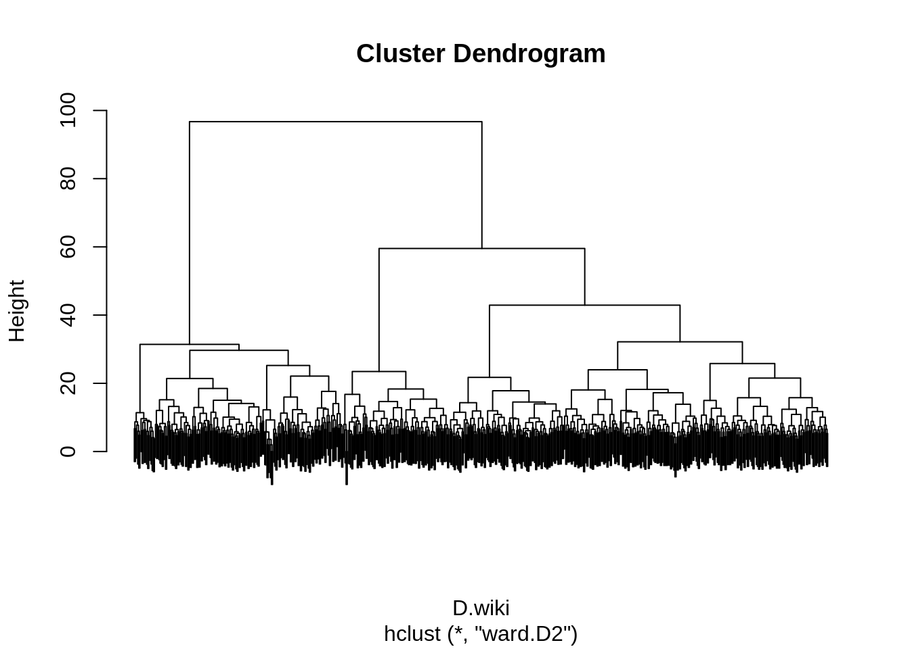
Al ser tantos datos el dendrograma se vuelve engorroso, pero podemos darnos una idea del numero de clusters. El dendrograma nos da una idea de elegir entre 1 y 4 clusters, sin embargo esta elección debe basarse en datos cualitativos y/o estadísticos.
Existe una función llamada rect.hclust en el paquete stats que nos permite encerrar en un rectángulo los clusters (solo para hclust). Por ejemplo si elegimos \(k=3\)
plot(res.ward, labels = FALSE)
rect.hclust(res.ward , k=3)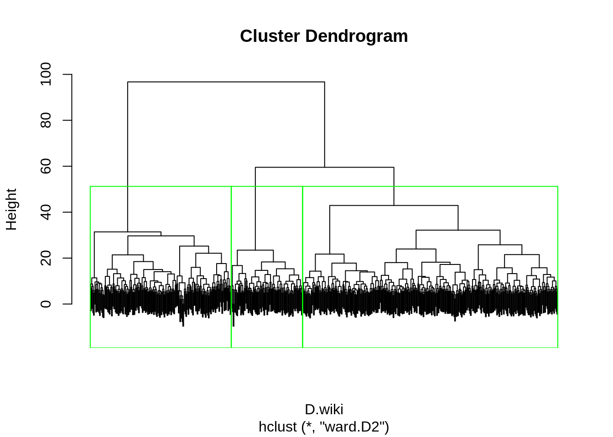
Supongamos \(k=4\). Tambien podemos pintar solo algún cluster en específico
plot(res.ward, labels = FALSE)
rect.hclust(res.ward , k=4, border = c("green","blue"),which = c(2,4))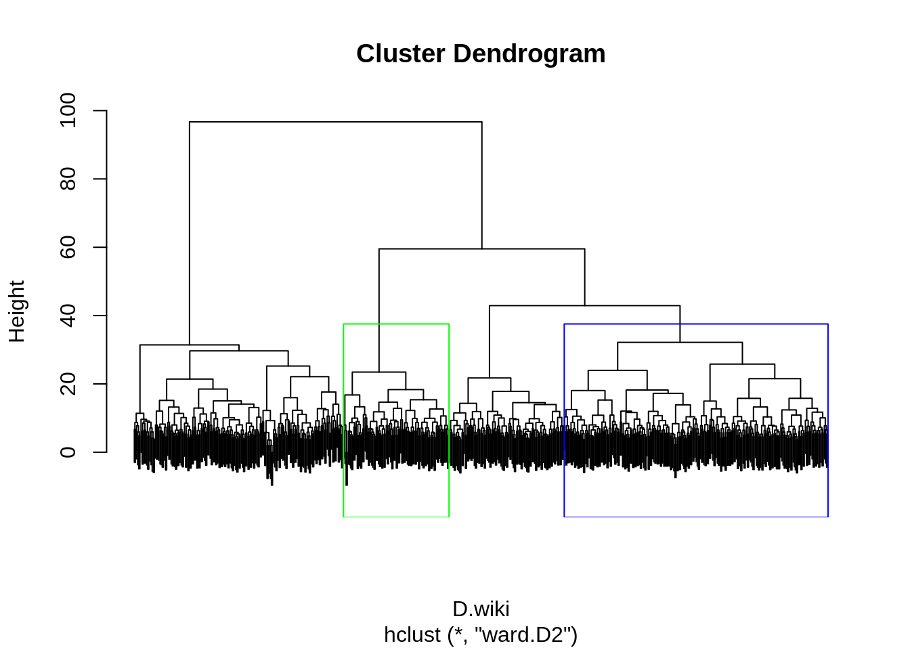
El paquete NbClust contiene varias medidas de validación para el número de clusters, en general es un paquete para determinar el mejor número de clusters
library(NbClust)
res.nbclust <- NbClust(data=wiki4HE.all, distance = "euclidean",method="ward.D2", min.nc = 2 , max.nc = 15)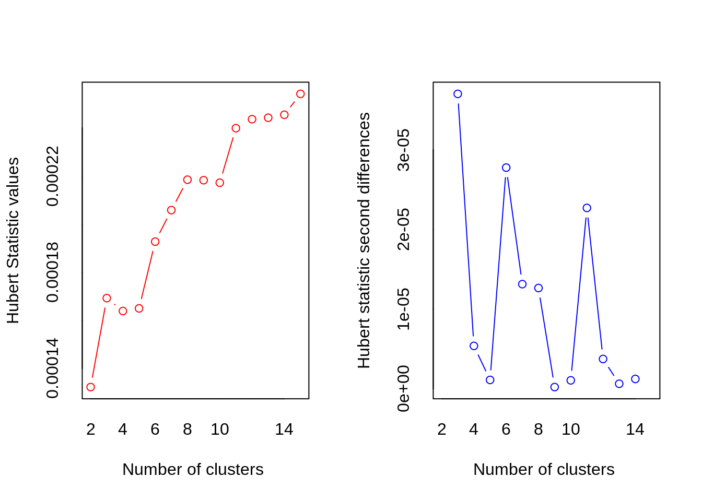
## *** : The Hubert index is a graphical method of determining the number of clusters.
## In the plot of Hubert index, we seek a significant knee that corresponds to a
## significant increase of the value of the measure i.e the significant peak in Hubert
## index second differences plot.
## 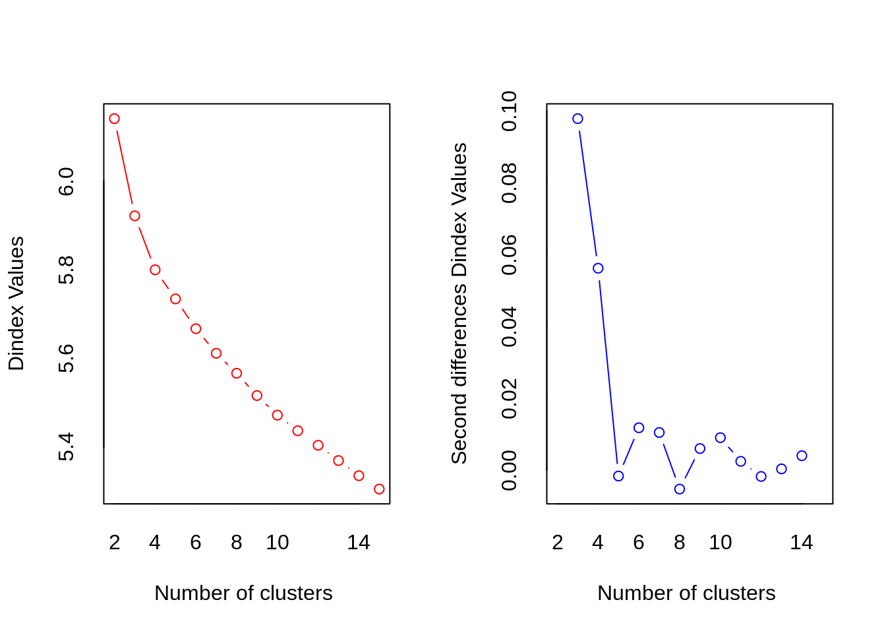
## *** : The D index is a graphical method of determining the number of clusters.
## In the plot of D index, we seek a significant knee (the significant peak in Dindex
## second differences plot) that corresponds to a significant increase of the value of
## the measure.
##
## *******************************************************************
## * Among all indices:
## * 8 proposed 2 as the best number of clusters
## * 8 proposed 3 as the best number of clusters
## * 1 proposed 4 as the best number of clusters
## * 2 proposed 9 as the best number of clusters
## * 1 proposed 10 as the best number of clusters
## * 2 proposed 15 as the best number of clusters
##
## ***** Conclusion *****
##
## * According to the majority rule, the best number of clusters is 2
##
##
## *******************************************************************podemos ver los resultados de cada indicador nbclust
res.nbclust$Best.nc## KL CH Hartigan CCC Scott Marriot TrCovW
## Number_clusters 2.000 2.0000 3.0000 2.0000 3.0000 4.000000e+00 3.0
## Value_Index 2.802 118.1267 22.1709 36.4757 386.7282 5.257584e+109 100183.3
## TraceW Friedman Rubin Cindex DB Silhouette Duda
## Number_clusters 3.0000 3.0000 3.0000 10.000 2.0000 2.0000 9.0000
## Value_Index 851.8762 9.7866 -0.4089 0.488 2.1048 0.1507 0.9247
## PseudoT2 Beale Ratkowsky Ball PtBiserial Frey McClain
## Number_clusters 9.0000 NA 2.0000 3.000 3.0000 1 2.0000
## Value_Index 9.7736 NA 0.2667 4689.593 0.3927 NA 0.6115
## Dunn Hubert SDindex Dindex SDbw
## Number_clusters 15.0000 0 2.0000 0 15.0000
## Value_Index 0.1871 0 1.0881 0 0.6651Tambien podemos ver como quedo la partición con la mejor elección
table(res.nbclust$Best.partition)##
## 1 2
## 435 188Obtenemos un grupo de tamaño extremadamente grande con más de dos tercios de las unidades. Desde un punto de vista cualitativo, esto a menudo es insatisfactorio y la solución involucrada a menudo se descarta.
A continuación gráficamos las medias para cada variable
k <- 2
mean.cluster.2 <- t( sapply( X = 1: k , FUN = function(nc) apply(wiki4HE.all[res.nbclust$Best.partition == nc , ] , 2 , mean)))
plot(mean.cluster.2[1,], type = "o", pch = 19, xlab = "Variables", ylab = "Cluster means" , ylim = c(1,5),
axes = FALSE , col = "blue", main = "means" )
lines(mean.cluster.2[2,] , type = "o", pch = 19 , col = "red")
axis(1, at = 1: ncol (mean.cluster.2) , lab = colnames(mean.cluster.2) , cex.axis = 0.5)
axis(2, at = 1:5 , las = 1)
legend(12 , 5 , c("Clus1" , "Clus2") , pch = 19 , cex = 0.7 , col = c( "blue" , "red" ))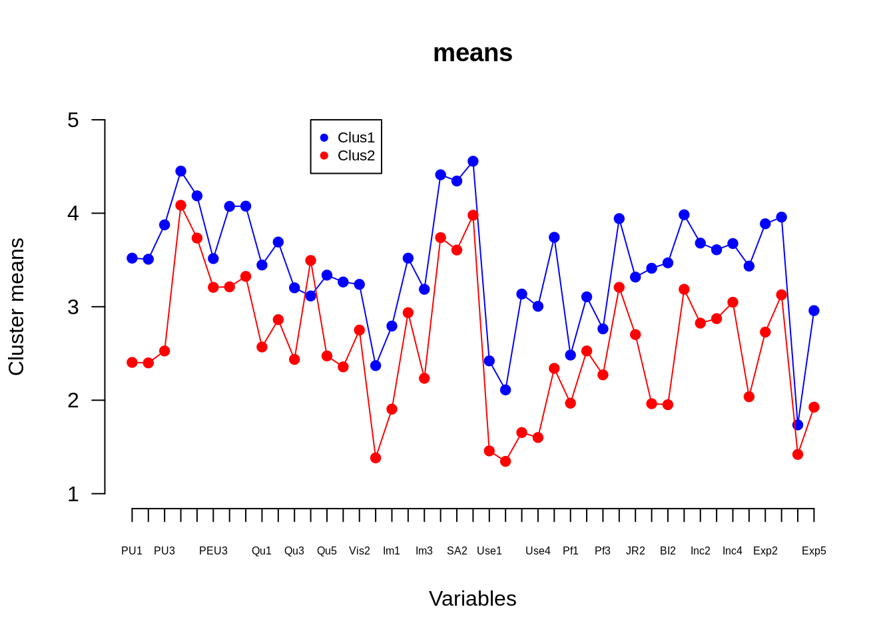
Notamos que en promedio hay un comportamiento consistente en los clusters. Sin embargo en la pregunta 4 (Qu4) es atípica en el cluster 2. La pregunta es “En mi área de especialización, Wikipedia tiene una calidad inferior a otros recursos educativos”. Lo que puede estar pasando es que 2 clusters están generalizando, por lo que sería mejor probar con \(k=3\).
Para \(k=3\)
table(cutree(res.ward,k=3))##
## 1 2 3
## 340 188 95Notamos que el grupo grande se separó en 2 (grupo 1 y 3). Ahora graficamos
k <- 3
mean.cluster.3 <- t( sapply( X = 1: k , FUN = function(nc) apply(wiki4HE.all[cutree(res.ward,k=3) == nc , ] , 2 , mean)))
plot(mean.cluster.3[1,], type = "o", pch = 19, xlab = "Variables", ylab = "Cluster means" , ylim = c(1,5),
axes = FALSE , col = "blue", main = "means" )
lines(mean.cluster.3[2,] , type = "o", pch = 19 , col = "red")
lines(mean.cluster.3[3,] , type = "o", pch = 19 , col = "darkgreen")
axis(1, at = 1: ncol (mean.cluster.3) , lab = colnames(mean.cluster.3) , cex.axis = 0.5)
axis(2, at = 1:5 , las = 1)
legend(12 , 5 , c("Clus1" , "Clus2","Clus3") , pch = 19 , cex = 0.7 , col = c( "blue" , "red", "darkgreen" ))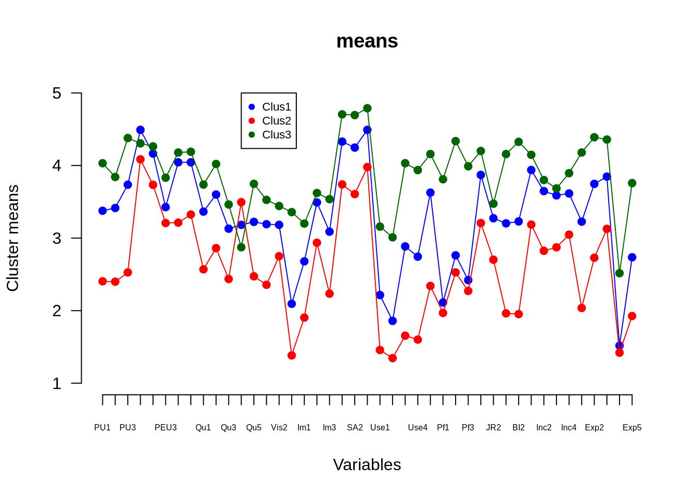
Al graficar podemos ver que el grupo verde identifica a los encuestados que están fuertemente a favor de utilizar Wikipedia como recurso didáctico. El grupo azul identifica a los encuestados que, en general, están a favor de utilizar Wikipedia como recurso didáctico pero que no participan activamente del blog. El color rojo son los que estàn menos de acuerdo con el uso de wikipedia como recurso didáctico.
Observación: Existen otros paquetes para validar el número de clusters como fpc, factoextra y clValid